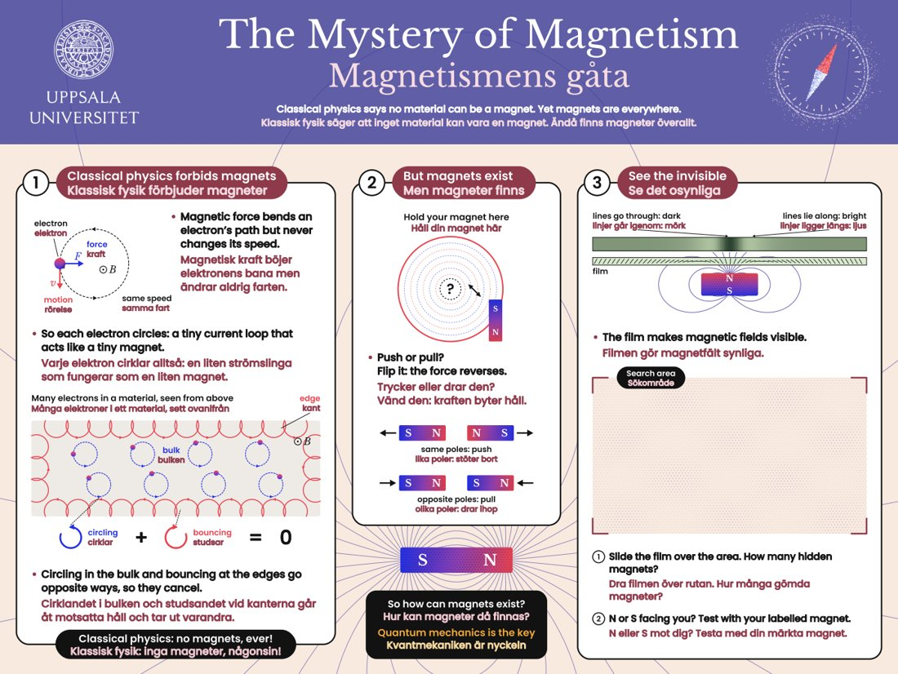

Se osynliga magneter See invisible magnets
Magnetfält är osynliga – men den här gröna filmen visar var de finns och åt vilket håll de går. Magnetic fields are invisible – but this green film shows you where they are and which way they run.
Magnetfält är osynliga – men den här gröna filmen visar var de finns och åt vilket håll de går. Magnetic fields are invisible – but this green film shows you where they are and which way they run.
ObservationObservation
I vår monter fanns filmen på två ställen:
At our booth the film turned up in two places:
Dolda poler. Lägg filmen på en kylskåpsmagnet: ljusa och mörka ränder visar polerna. En stavmagnet har bara två.
Hidden poles. Lay the film on a fridge magnet: light and dark stripes show its poles. A bar magnet has just two.
Skattjakten. I ruta 3 på affischen Magnetismens gåta finns ett sökområde med magneter gömda bakom affischen. Dra filmen över området och räkna magneterna. Håll sedan en märkt magnet nära: stöter den bort eller drar den? Då vet du om N eller S pekar mot dig.
The treasure hunt. In box 3 of the poster The Mystery of Magnetism there's a search area with magnets hidden behind the poster. Slide the film over it and count the magnets. Then hold a labelled magnet near each one: does it push or pull? That tells you whether N or S faces you.

FörklaringExplanation
Filmen är full av mikroskopiska kapslar med små nickelflagor i olja. Flagorna är magnetiska och vrider sig efter magnetfältet.
The film is full of microscopic capsules with tiny nickel flakes floating in oil. The flakes are magnetic and turn to follow the magnetic field.
Där fältet går rakt igenom filmen – vid en pol – ställer sig flagorna på högkant och filmen ser mörk ut. Där fältet går längs filmen, mellan polerna, lägger de sig platt och speglar ljuset, så filmen blir ljus.
Where the field goes straight through the film – at a pole – the flakes stand on edge and the film looks dark. Where the field runs along the film, between the poles, they lie flat and reflect the light, so the film looks bright.
En kylskåpsmagnet är randig: den har många smala ränder med nord och syd om vartannat. Därför fastnar den bra med ena sidan men knappt med den andra.
A fridge magnet is striped: it has many thin strips of north and south side by side. That's why it sticks well with one side but barely with the other.
Testa självTry it
Fig. 3 Simulering av filmen, räknad från magneternas fält. Dra magneten – eller i skattjakten förstoringsglaset. Fig. 3 Simulated film, calculated from the magnets' fields. Drag the magnet – or, in the treasure hunt, the magnifying glass.
Vår forskningOur research
Forskare kan sällan se det de studerar, så de använder sonder som känner av något – som magnetism – och gör om det till en bild. Hårddiskar lagrar data som pyttesmå magnetiska områden, och vi räknar på hur sådana områden beter sig i nya material.
Scientists can rarely see what they study, so they use probes that sense something – like magnetism – and turn it into a picture. Hard drives store data as tiny magnetic regions, and we calculate how such regions behave in new materials.
FördjupningGoing deeper
Affischen Magnetismens gåta berättar att klassisk fysik faktiskt säger att magneter är omöjliga! Elektronernas cirkelbanor tar ut varandra. Först kvantmekaniken, med elektronens spinn, förklarar varför magneter finns.
The poster The Mystery of Magnetism explains that classical physics actually says magnets are impossible! The electrons' circling motions cancel out. Only quantum mechanics, with the electron's spin, explains why magnets exist.
Med känsliga magnetmätare kan arkeologer hitta begravda murar och eldstäder utan att gräva – precis som du hittade skatterna genom affischen.
With sensitive magnetic sensors, archaeologists can find buried walls and fireplaces without digging – just like you found the treasure through the poster.
TillämpningarApplications
Varje bit är ett litet magnetiskt område som pekar åt ena eller andra hållet.
Every bit is a tiny magnetic region pointing one way or the other.
Gamla bankkort och hotellnycklar lagrar information i en magnetremsa.
Older bank cards and hotel keys store information in a magnetic stripe.
Fabriker kontrollerar magneter i motorer och sensorer med samma sorts film.
Factories check the magnets in motors and sensors with the same kind of film.
Magnetiska kraftmikroskop gör bilder av magnetfält som är en miljon gånger finare.
Magnetic force microscopes image fields a million times finer.
SjälvtestSelf-test
Om ossAbout us
Vi är avdelningen för materialteori vid Uppsala universitet. Vi använder fysik och datorer för att förstå hur material fungerar – och för att förutsäga helt nya material, ibland innan någon har tillverkat dem.
We are the Division of Materials Theory at Uppsala University. We use physics and computers to figure out how materials work – and to predict brand-new ones, sometimes before anyone has made them.